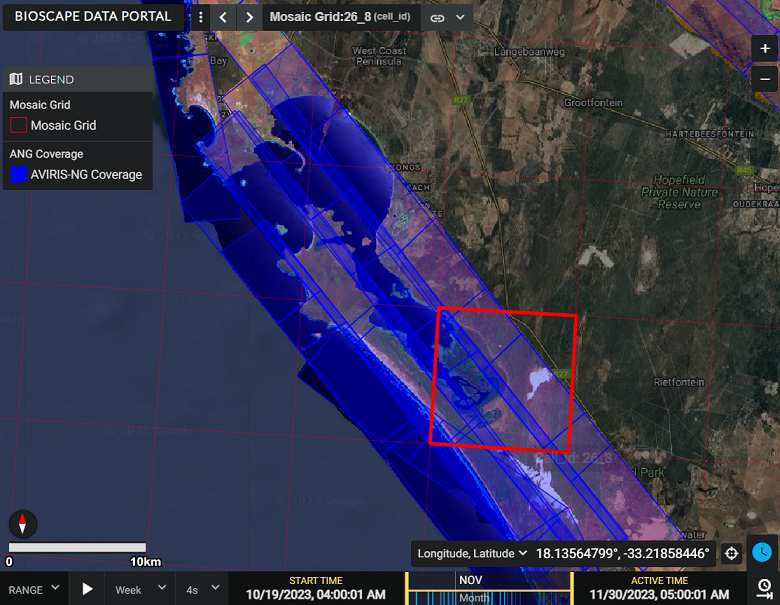
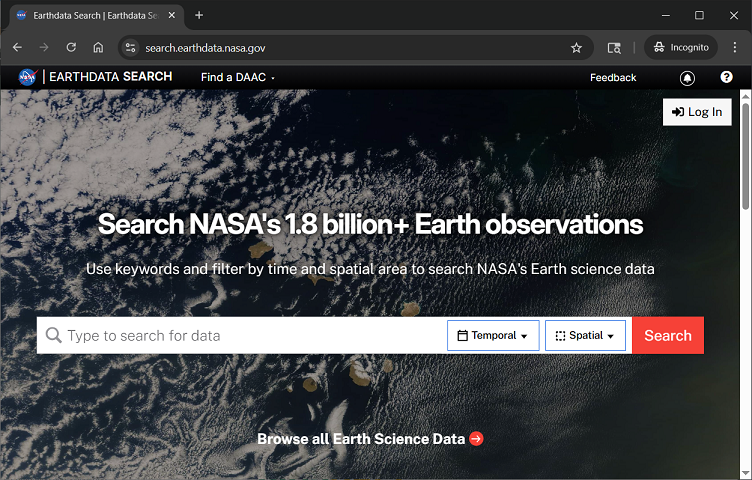
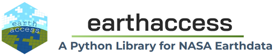

import earthaccess
import geopandas as gpd
import pyproj
from pyproj import Proj
import xarray as xr
import matplotlib.pyplot as plt
import numpy as np
import pandas as pd
from shapely.ops import transform
from shapely.ops import orient
from shapely.geometry import Polygon, MultiPolygon
import folium
import hvplot.xarray
import holoviews as hv
hvplot.extension('bokeh')
import rioxarray as rx
from rioxarray import merge
import rasterioAVIRIS Data - Discovery, Access, and Visualization
Overview
This tutorial will demonstrate Earthdata discovery and direct access of NASA airborne data archived through the ORNL DAAC. We’ll explore archived SBG-relevant airborne data using Earthdata Search and then, through a Notebook Tutorial, programmatically access and visualize Level 3 AVIRIS-Next Generation (ANG) Reflectance dataset collected during the Biodiversity Survey of the Cape (BioSCape) Campaign. BioSCape is an integrated field and airborne campaign in South Africa’s Greater Cape Floristic Region (GCFR) where collections occurred in 2023. The BioSCape Campaign utilzed four NASA airborne instruments to collect UV/visible to short wavelength infrared (UVSWIR) and thermal imaging (TIR) spectroscopy and laser altimetry LiDAR data over terrestrial and aquatic targets. Airborne Visible InfraRed Imaging Spectrometer - Next Generation (AVIRIS-NG), Portable Remote Imaging SpectroMeter (PRISM), Land, Vegetation, and Ice Sensor (LVIS), and Hyperspectral Thermal Emission Spectrometer (HyTES).
- Learn more about BioSCape
- Nasa Earthdata Search: Discover Earthdata BioSCape Data
The BioSCape Campaign has produced an AVIRIS-NG L3 Resampled Mosaic dataset.
- Surface reflectance data (Level 2b) derived from the AVIRIS-NG instrument were resampled to 5-m spatial resolution and mosaiced into a regular tile system of 807 tiles. A given tile includes multiple AVIRIS-NG scenes from multiple flight lines spanning multiple days. The mosaics in this dataset were generated by stitching together separate scenes and resampling to 5-m resolution in the Hartebeesthoek94 projected coordinate system (WGS-84 datum, EPSG 9221). The mosaic files are distributed on a tiled grid system, and the tile name is included in the file name. Mosaics were generated by manually grouping sets of flight lines into different chunks that should be placed ‘in front of’ or ‘behind’ other chunks. The selection criteria included a combination of the weather during observations, flight conditions, flightbox design, and the time the flight was taken.
Brodrick, P.G., A.M. Chlus, R. Eckert, J.W. Chapman, M. Eastwood, S. Geier, M. Helmlinger, S.R. Lundeen, W. Olson-Duvall, R. Pavlick, L.M. Rios, D.R. Thompson, and R.O. Green. 2025. BioSCape: AVIRIS-NG L3 Resampled Reflectance Mosaics, V2. ORNL DAAC, Oak Ridge, Tennessee, USA. https://doi.org/10.3334/ORNLDAAC/2427
Dataset Data Processing Levels - Level 3: Variables mapped on uniform space-time grid scales, usually with some completeness and consistency.

- Demo: Live Demo of Earthdata Search
Tutorial: Programmatic Discovery and Access of Airborne Data: BioSCape Campaign AVIRIS-NG Resampled Mosaic (L3) Reflectance
Demo: Earthdata Search - ORNL DAAC Airborne Facility Instrument and Campaign Collections

Tutorial: Programmatic Discovery and Access of Airborne Data
BioSCape Campaign AVIRIS-NG Reflectance Level 3 Mosaic Dataset
Requirements
Step 1: Authentication and Airbone Datasets Search Examples with earthaccess

earthaccess is a Python library that simplifies data discovery and access to NASA Earthdata data by providing an abstraction layer to NASA’s APIs for programmatic access.
In this tutorial we’ll use earthaccess to: - handle authentication with NASA’s Earthdata Login (EDL), - search the NASA Earthdata Data holdings using NASA’s Common Metadata Repository (CMR), and - provide direct cloud file access
Earthdata Login
NASA Earthdata Login is a user registration and profile management system for users getting Earth science data from NASA Earthdata. If you download or access NASA Earthdata data, you need an Earthdata Login.
Using earthaccess we’ll login and authentice to NASA Earthdata Login. - For this exercise, we will be prompted for and interactively enter our Eathdata Login credentials (login, password)
auth = earthaccess.login()1.1 earthaccess to search the NASA Common Metadata Repository for a specific airborne instrument
results = earthaccess.search_datasets(instrument="AVIRIS-3")
#results = earthaccess.search_datasets(instrument="AVIRIS-NG")
#results = earthaccess.search_datasets(instrument="AVIRIS") # AVIRIS-Classic
#results = earthaccess.search_datasets(instrument="MASTER")
#results = earthaccess.search_datasets(instrument="HYTES")
#results = earthaccess.search_datasets(instrument="PRISM")
print(f"Total Datasets (results) found: {len(results)}")List the short-name for each dataset
for item in results:
summary = item.summary()
print(summary["short-name"])1.2 Search UMM-G for Specific Campaigns
- AVIRIS-3 datasets contain
campaigninformation in the Unified Metadata Model-Granule (UMM-G)AdditionalAttributes - List the campaigns and number of granules in each campaign
- Note that at the time of this workshop, this functionality is specific to AVIRIS-3 Datasets
def get_campaign_names(granules):
"""get campaign names for all granules"""
c = []
for g in granules:
for attrs in vars(g)['render_dict']['umm']['AdditionalAttributes']:
if attrs['Name'] == 'Campaign':
c += attrs['Values']
return c
# earthdata search
granules = earthaccess.search_data(
#short_name = 'AV3_L1B_RDN_2356',
doi="10.3334/ORNLDAAC/2356"
)
campaigns = get_campaign_names(granules)
#print campaign names and granules
for name in list(set(campaigns)):
print(f'{name} --> {campaigns.count(name)} granules')If you know a Campaign flown with AVIRIS-3, you can directly query the AdditionalAttributes
doi="10.3334/ORNLDAAC/2356" # AV3_L1B_RDN_2356
query = earthaccess.DataGranules().doi(doi)
query.params['attribute[]'] = 'string,Campaign,SHIFT'
l1b = query.get_all()
print(f'Granules found: {len(l1b)}')1.3 Search by Project knowing our dataset of interest was part of the BioSCape project.
results = earthaccess.search_datasets(project="BioSCape")
print(f"Total Datasets (results_projects) found: {len(results)}")For the instrument==“AVIRIS-NG” search, let’s look at the first result to see all of the CMR values that are returned - The first dataset listed is from the ABoVE Campaign - We see many useful fields for any one dataset including: short-name, concept-id, the S3BucketAndObjectPrefixNames
for index, item in enumerate(results):
if index == 0:
summary = item.summary()
print(summary)Let’s look at short-name for all of the search results
for item in results:
summary = item.summary()
print(summary["short-name"])BioSCape_ANG_V02_L3_RFL_Mosaic_2427is theshort-nameof the dataset of interest for this tutorial.
Let’s use earthaccess to query the BioSCape: AVIRIS-NG L3 Resampled Reflectance Mosaics, V2 data to discover the files within that dataset.
results = earthaccess.search_data(
short_name = 'BioSCape_ANG_V02_L3_RFL_Mosaic_2427',
)
print(f"Total granules found: {len(results)}")Let’s look at the first 2 results and examine the details of the granule-level CMR metadata information
# granule-level CMR metadata information
results[:2]Step 2. Further Define and Refine our Search Parameters
2.1 Define more search parameters to limit our search
bounding_boxtemporalrangegranule_namerefined
Let’s first create and visualize a bounding box for an area-of-interest within the South Africa Greater Cape Floristic Region (GCFR) of the BioSCape Campaign
import geopandas as gpd
from shapely.geometry import Polygon
from shapely.ops import transform
import pyproj
def create_geo_bb(coordinates, crs_in='epsg:4326', crs_out='epsg:4326'):
polygon_shape = Polygon(coordinates)
if crs_in != crs_out:
project_in = pyproj.Proj(init=crs_in)
project_out = pyproj.Proj(init=crs_out)
polygon_shape = transform(pyproj.Transformer.from_proj(project_in, project_out, always_xy=True).transform, polygon_shape)
polygon = gpd.GeoDataFrame(geometry=[polygon_shape], crs=crs_out)
return polygon
coordinates = [
(17.9907, -33.1243),
(18.2469, -33.1243),
(18.2469, -33.2817),
(17.9907, -33.2817),
(17.9907, -33.1243)
]
polygon_gdf = create_geo_bb(coordinates)
print(polygon_gdf)#polygon_gdf.crspolygon_gdf.explore(fill=False, tiles='https://mt1.google.com/vt/lyrs=s&x={x}&y={y}&z={z}', attr='Google')We’ll use this bounding box and temporal parameters to refine our search of BioSCape AVIRIS-NG L3 files in our region and time of interest
Again, using earthaccess we can query the BioSCape: AVIRIS-NG L3 Resampled Reflectance Mosaics, V2 data to discover files within the spatial and temporal subset of interest.
recall we discovered in our Earthdata Search investigation that datasets have NASA Earthdata Unique Identifiers (e.g. DOI, ConceptID, short_name)
Dataset of interest short_name:
BioSCape_ANG_V02_L3_RFL_Mosaic_2427The BioSCape Airborne Campaign took place from 2023-10-22 to 2023-11-26
# bounding lon, lat as a list of tuples
bounds = polygon_gdf.geometry.apply(orient, args=(1,))
# simplifying the polygon to bypass the coordinates
# limit of the CMR with a tolerance of .01 degrees
xy = bounds.simplify(0.01).get_coordinates()
date_range = ("2023-10-22", "2023-11-26")
results = earthaccess.search_data(
short_name = 'BioSCape_ANG_V02_L3_RFL_Mosaic_2427',
polygon=list(zip(xy.x, xy.y)),
temporal = date_range,
granule_name=('*AVIRIS-NG_BIOSCAPE_V02_L3*')
)
print(f"Total granules found: {len(results)}")For our search parameters, let’s explore the granules found
- Let’s look at the first result
results[:2]results[7]You can download these files directly to your local machine by clicking on any of the files - We also see that these data are Cloud Hosted: True
2.2 Create and Visualize the Bounding Boxes of the subset of files
From each granule, we’ll use the CMR Geometry information to create a plot of the AVIRIS-3 flight lines from our temporal and spatial subset
Below, we define two functions to plot the search results over a basemap - Function 1: converts UMM geometry to multipolygons – UMM stands for NASA’s Unified Metadata Model - Function 2: converts the Polygon List [ ] to a geopandas dataframe
def convert_umm_geometry(gpoly):
"""converts UMM geometry to multipolygons"""
multipolygons = []
for gl in gpoly:
ltln = gl["Boundary"]["Points"]
points = [(p["Longitude"], p["Latitude"]) for p in ltln]
multipolygons.append(Polygon(points))
return MultiPolygon(multipolygons)
def convert_list_gdf(datag):
"""converts List[] to geopandas dataframe"""
# create pandas dataframe from json
df = pd.json_normalize([vars(granule)['render_dict'] for granule in datag])
# keep only last string of the column names
df.columns=df.columns.str.split('.').str[-1]
# convert polygons to multipolygonal geometry
df["geometry"] = df["GPolygons"].apply(convert_umm_geometry)
# return geopandas dataframe
return gpd.GeoDataFrame(df, geometry="geometry", crs="EPSG:4326")
subset_gdf = convert_list_gdf(results)
subset_gdf.crs
#subset_gdf.drop('Version', axis=1, inplace=True)
#subset_gdf.explore(fill=False, tiles='https://mt1.google.com/vt/lyrs=s&x={x}&y={y}&z={z}', attr='Google')# let's visualize the bounding boxes of the selected files
subset_gdf = convert_list_gdf(results)
mapObj = folium.Map(location=[-33.1456, 18.0622], zoom_start=11, control_scale=True)
#-118.2036, 34.2705
#folium.GeoJson(gdf).add_to(mapObj)
subset_gdf.drop('Version', axis=1, inplace=True)
folium.GeoJson(subset_gdf, name="SUBSET FLIGHT LINES", color="blue", style_function=lambda x: {"fillOpacity": 0}).add_to(mapObj)
folium.GeoJson(polygon_gdf, name="LA FIRE SUBSET AREA", color="white", style_function=lambda x: {"fillOpacity": 0}).add_to(mapObj)
#folium.GeoJson(lasubset, name="SUBSET FLIGHT LINES", style_function=lambda x: {"fillOpacity": 0}).add_to(mapObj)
# create ESRI satellite base map
esri = 'https://server.arcgisonline.com/ArcGIS/rest/services/World_Imagery/MapServer/tile/{z}/{y}/{x}'
folium.TileLayer(tiles = esri, attr = 'Esri', name = 'Esri Satellite', overlay = False, control = True).add_to(mapObj)
folium.LayerControl().add_to(mapObj)
mapObjLet’s add the GranuleUR to the visualization of the selected tile bounding boxes
#Visualize the selected tile bounding boxes and the GranuleUR
#m = AVNG_CP[['fid','geometry']].explore('fid')
m = subset_gdf[['GranuleUR', 'geometry']].explore('GranuleUR', tiles='https://mt1.google.com/vt/lyrs=s&x={x}&y={y}&z={z}', attr='Google')
#explore('LandType', tiles='https://mt1.google.com/vt/lyrs=s&x={x}&y={y}&z={z}', attr='Google')
mWe have a subset of files of interest for our region of interest. Now let’s see how to access those files
Step 3. Cloud-based Access Methods
Datasets in NASA Earthdata Cloud - NASA Earthdata is in AMAZON AWS us-west-2 region (physically in Oregon) - Most data are in AWS Cloud Data Storage (S3) Buckets in this cloud - Access Earthdata Cloud from another Cloud that is in the same region - the openscapes 2i2c Hub is in that region - Airborne (AVIRIS) files can be big, processinge it in the cloud may be advantageous, saving your local device storage
Recall from our earthaccess search results, each granule of the dataset has 3 data files: - *_QL.tif - *_RFL.nc - *_UNC.nc
Let’s use the results from earthaccess API search to display the data_links of the Quick Look geoTIFF files
def get_s3_links(g, suffix_str):
return [i for i in g.data_links(access="direct") if i.endswith(suffix_str)][0]
tif_f = []
for g in results:
tif_f.append(get_s3_links(g, 'QL.tif'))
tif_f3.1 Directly Open and Access NASA Earthdata from the AWS S3 Session
Calling open( ) from the earthaccess API library on an S3FileSystem object… - returns an S3File object, which mimics the standard Python file protocol, allowing you to read and write data to S3 objects - returns a list of file-like objects that can be used to access files hosted on S3 third party libraries like xarray - *_paths contains references to files on the remote filesystem. The ornl-cumulus-prod-public is the S3 bucket in AWS us-west-2 region
gtiff_paths = earthaccess.open(tif_f, provider="ORNL_CLOUD")gtiff_pathsNow that we’ve opened the S3 objects, we can treat them as if they are local files.
Let’s open and visualize the geoTIFF files using familiar Python packages like rioxarray - First we’ll determine the crs and visualize one file
with rasterio.open(gtiff_paths[7]) as dataset:
# Read the CRS
crs = dataset.crs
print(f"The CRS of the GeoTIFF is: {crs}")
print(f"The type of CRS is: {type(crs)}")Let’s add and visualize a plot location. We’ll create a spectral profile of this plot location in a subsequent code block.
terr_lat = -33.1733
terr_lon = 18.1374
aqua_lat = -33.1925
aqua_lon = 18.1166
# translate coordinates
from pyproj import Proj
p = Proj("EPSG:3857", preserve_units=False)
terr_x,terr_y = p(terr_lon, terr_lat)
aqua_x, aqua_y = p(aqua_lon, aqua_lat)
print('terr_easting:', terr_x)
print('terr_northing', terr_y)
print('aqua_easting:', aqua_x)
print('aqua_northing', aqua_y)Visualize the tile geoTIFF and plot location
# Open the GeoTIFF file
raster = rx.open_rasterio(gtiff_paths[7])
# Plot the RGB image
plt.figure(figsize=(10, 10))
raster.plot.imshow(rgb="band")
plt.scatter(terr_x,terr_y, color='red')
plt.scatter(aqua_x,aqua_y, color='blue')
plt.show()And now we’ll merge the 8 files and visualize the data available over our region of interest
data_arrays = []
for g in gtiff_paths:
data_arrays.append(rx.open_rasterio(g))
merged_array = rx.merge.merge_arrays(data_arrays, method='last')
merged_array.rio.to_raster('merged_image.tif')
#plt.figure(figsize=(10, 10))
#merged_array.plot.imshow(rgb='band')
#plt.show()ANG_L3_EPSG = 'EPSG:3857'
subset_gdf_9221 = subset_gdf.to_crs(ANG_L3_EPSG)
fig, ax = plt.subplots(figsize=(10, 10))
merged_array.plot.imshow(rgb='band', ax=ax)
subset_gdf_9221.plot(ax=ax, facecolor='none', edgecolor='red', alpha=0.3)
plt.show()Step 3.2 List S3 Links for Mosaic AVIRIS-NG 425-band Reflectance netCDF Files
- Again, we’ll use the
resultsfrom earthaccess API search to display thedata_linksof the netCDF files
def get_s3_links(g, suffix_str):
return [i for i in g.data_links(access="direct") if i.endswith(suffix_str)][0]
rfl_f = []
for g in results:
rfl_f.append(get_s3_links(g, 'RFL.nc'))
rfl_fRecall that these are Multifile Granules with 3 files per Granule. We’ve selected just the netCDF files in granule_arr
Step 3.3 Directly Open, Access, and Visualize AVIRIS-NG Mosaic Data from the AWS S3 Session
Using xarray and the earthaccess.open function we can directly read from a remote filesystem, but not download a file.
paths = earthaccess.open(rfl_f, provider="ORNL_CLOUD")pathsds_set = xr.open_dataset(paths[7], engine="h5netcdf")
ds_setNotice that this xarray.Dataset is limited in what is showing and has no variables.
The netCDF data model for these data includes multi-group hierarchies within a single file where each group maps to an xarray.Dataset - In xarray, it is recommended to use DataTree to represent hierarchical data >netCDF groups can only be loaded individually as Dataset objects, a whole file of many nested groups can be loaded as a single xarray.DataTree object. To open a whole netCDF file as a tree of groups use the xarray.open_datatree() function. - This implementation in XArray is decribed here: https://docs.xarray.dev/en/stable/user-guide/io.html
ds = xr.open_datatree(paths[7], engine="h5netcdf")
dsNow we see that the netCDF files contains Groups (3) - reflectance - obs - scene info
We’ll open the file again as a datatree, and then convert it to a dataset with the reflectance variable
rfl_ds = xr.open_datatree(paths[7],
engine='h5netcdf').reflectance.to_dataset()
rfl_dsNext, we’ll subset the wavelenghts that correspond to RGB bands and visualize the true color image with holoview
ds_rgb = rfl_ds.reflectance.sel(wavelength=[637, 552, 462], method="nearest")ds_rgb.hvplot.rgb('easting', 'northing', rasterize=True,robust=True, data_aspect=1, aspect='equal',
bands='wavelength', frame_width=600)#### false color composite
#ds_fcc = rfl_ds.reflectance.sel(wavelength=[800, 637, 552], method="nearest")
#ds_fcc.hvplot.rgb('easting', 'northing', rasterize=True,robust=True, data_aspect=1, aspect='equal',
# bands='wavelength', frame_width=600)#### The Minimum Noise Fraction transformation (MNF) composite images (B456, B546, and B561), can be used to enhance the delineation of different rock types
#ds_mnf = rfl_ds.reflectance.sel(wavelength=[456, 546, 561], method="nearest")
#ds_mnf.hvplot.rgb('easting', 'northing', rasterize=True,robust=True, data_aspect=1, aspect='equal',
# bands='wavelength', frame_width=600)Step 3.4 Plot Terrestrial and Aquatic Plots Spectral Profiles
Convert the latitude longitude plots to the AVIRIS-NG netCDF files projection
#latitude = -33.1733
#longitude = 18.1374
# translate coordinates
#from pyproj import Proj
p = Proj("EPSG:9221", preserve_units=False)
terr_x,terr_y = p(terr_lon, terr_lat)
print('terr_easting:',terr_x)
print('terr_northing', terr_y)
aqua_x,aqua_y = p(aqua_lon, aqua_lat)
print('aqua_easting:', aqua_x)
print('aqua_northing', aqua_y)Define a list of bands that are atmospheric windows to avoid in plotting
# Define a list of wavelengths that are "bad"
bblist = np.ones((425,)) # create a 1D array with values ones
# set tails and atmospheric window to zero
bblist[0:14] = 0 # tail
bblist[193:210] = 0 # atmospheric window
bblist[281:320] = 0 # atmospheric window
bblist[405:] = 0 # tailSelect and plot the spectral profiles from the terrestrial and aquatic plot locations nearest pixel
# Compare spectra from a terrestrial and aquatic plot
terr_plot = rfl_ds.reflectance.sel(easting=terr_x, northing=terr_y, method='nearest')
terr_plot[bblist == 0] = np.nan
aqua_plot = rfl_ds.reflectance.sel(easting=aqua_x, northing=aqua_y, method='nearest')
aqua_plot[bblist == 0] = np.nan
terr_plot.plot.line(ylim=(0,.4), color = 'g', label="Terrestrial Plot")
aqua_plot.plot.line(ylim=(0,.4),color = 'b', label="Aquatic Plot")
plt.rcParams['figure.figsize'] = [10,7]
plt.xlabel('AVIRIS-NG wavelength', fontsize=12)
plt.ylabel('reflectance', fontsize=12)
plt.legend(loc="upper left")
plt.show()These next block of code will merge the selected files. We will not run this during the workshop. uncomment to run.
#s3_obj = []
#for fh in paths:
# s3_obj.append(xr.open_datatree(fh, engine='h5netcdf',
# ).reflectance.to_dataset())
#ds = xr.combine_by_coords(s3_obj, combine_attrs='override')